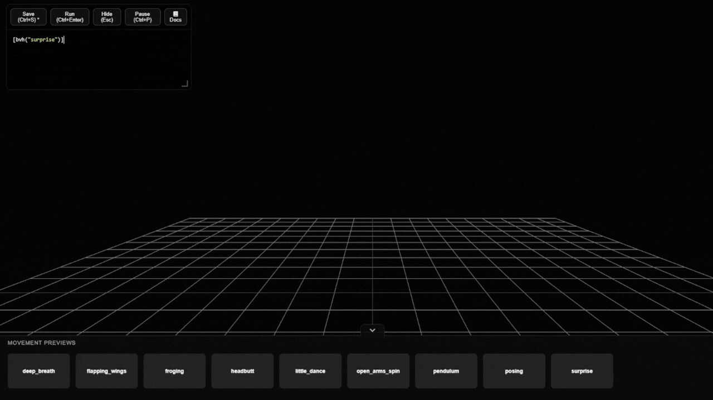
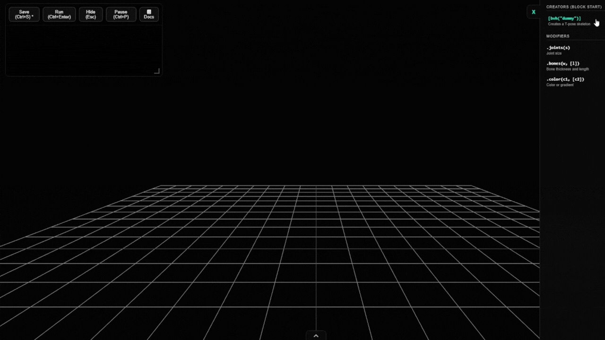
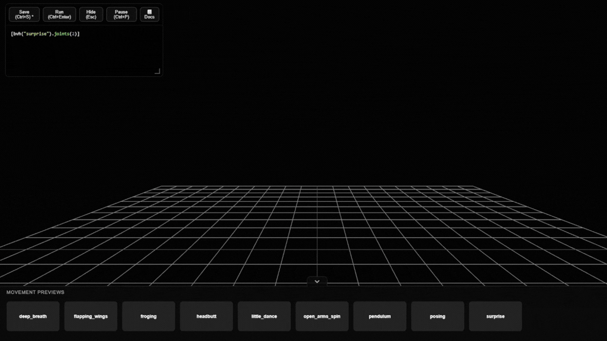
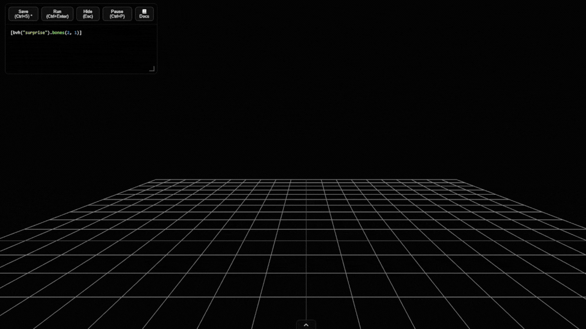
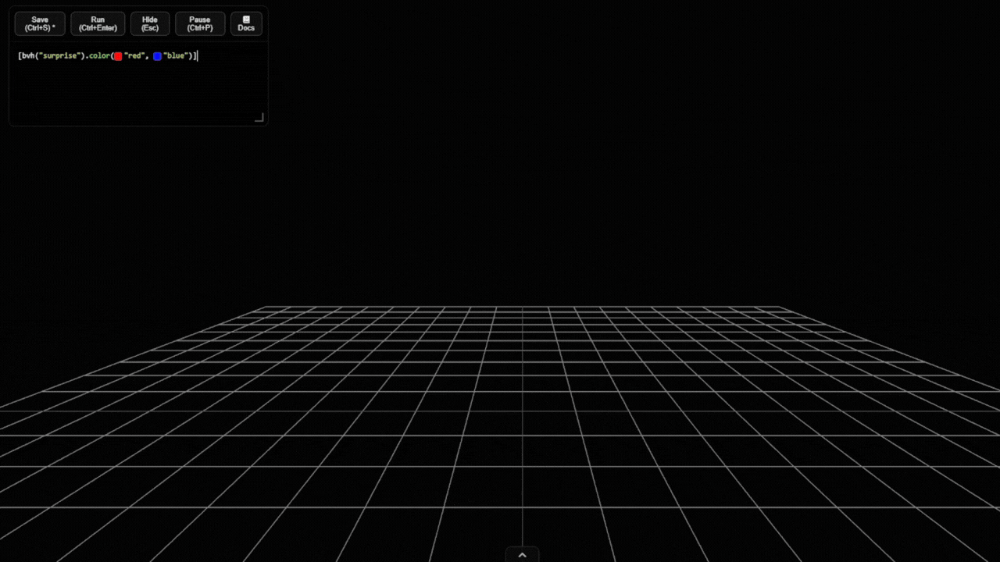
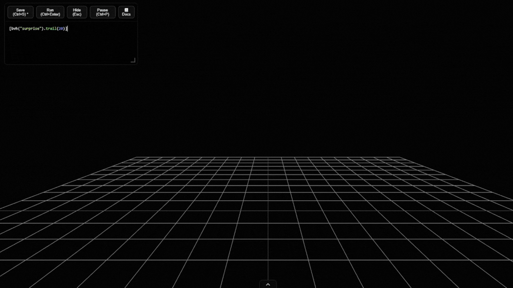

bvh( name )
Loads and initializes a pre-recorded animation to apply it to the skeleton.
[bvh("surprise")]
Parameters:
name (string with the name of the animation file, without
the .bvh extension).
bvh( "dummy" )
Generates a static skeleton in a T-pose. Useful for visualizing design modifications without the distraction of animation movement.
[bvh("dummy")]
Parameters: No additional parameters required, it works by passing "dummy" to the
main function.
.joints( size )
Modifies the size of the spheres that represent the skeleton's joints.
[bvh("surprise").joints(2)]
Parameters:
size (numeric value defining the scale of the joint).
.bones( thickness, [length] )
Adjusts the thickness and, optionally, the length of the bones connecting the joints.
[bvh("surprise").bones(2, 1)]
Parameters:
thickness (bone width), length (optional
parameter to alter the distance between connections).
.color( color1, [color2] )
Applies a solid color to the skeleton, or generates a gradient if two colors are specified.
[bvh("surprise").color("red", "blue")]
Parameters:
color1 (main color in text or hex format),
color2 (optional secondary color to create the gradient).
.trail( frames )
Creates a visual trail by cloning previous frames to show the movement trajectory.
[bvh("surprise").trail(20)]
Parameters:
frames (integer indicating how many previous steps form
the trail).